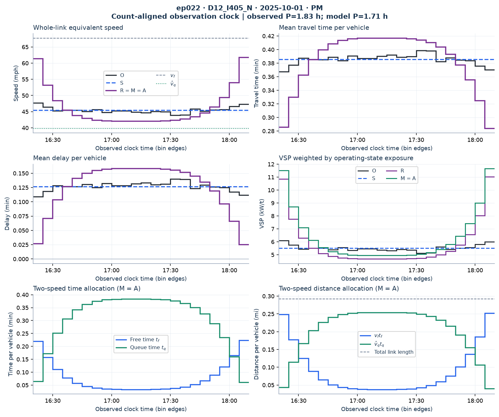
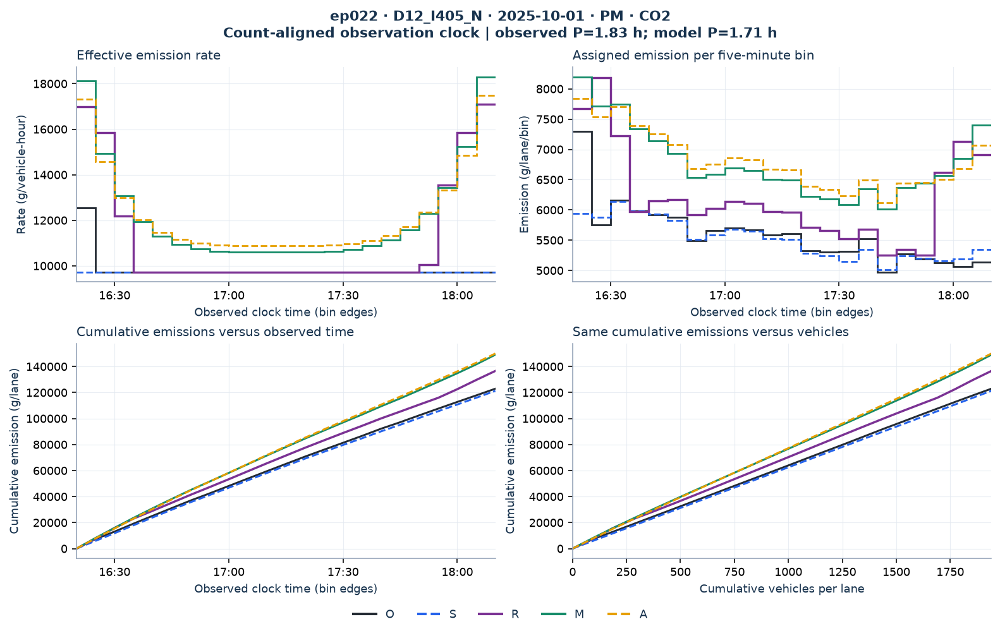
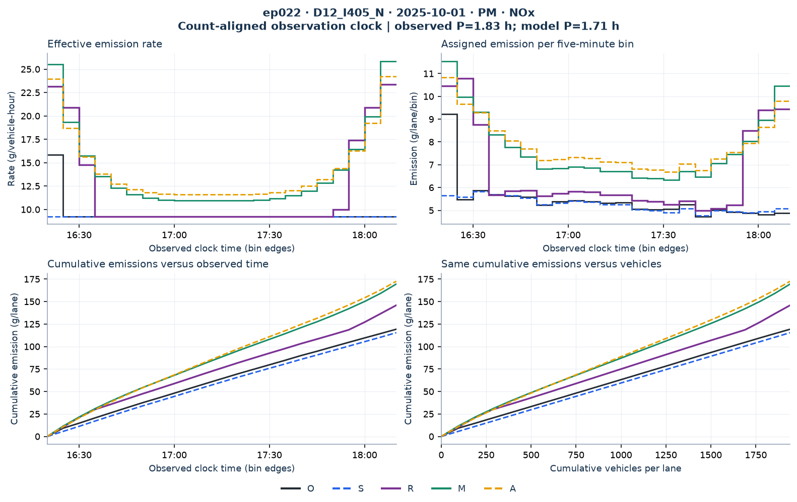
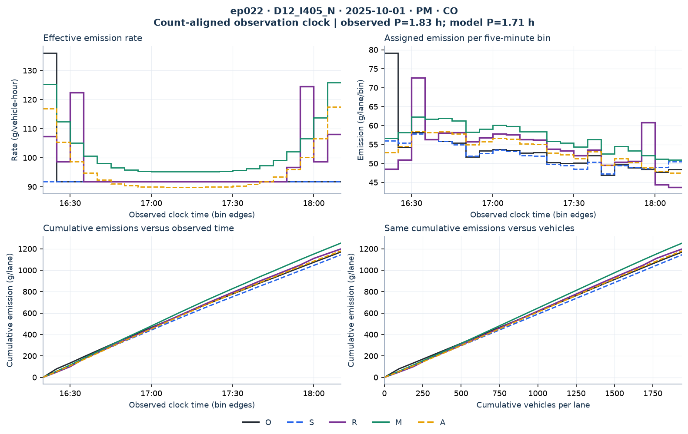
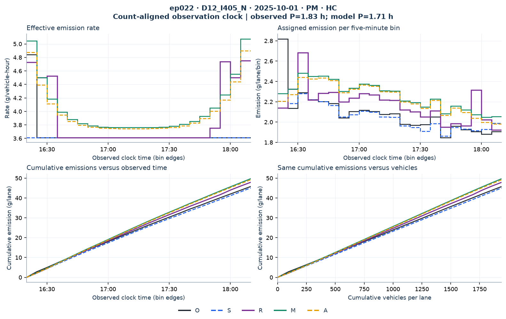

state_transition__PeMS::D12_I405_N::L405N-065__2025-10-01__050
Common-clock diagnostic: model vehicle groups are assigned to recorded five-minute bins by cumulative-count overlap. The fitted duration may differ from the observed duration. These are comparisons with the observed-speed calculation O, not measured vehicle trajectories. Counts, vehicle-hours and emissions are per lane.
| Observed duration | Fitted duration | Volume | Length |
|---|---|---|---|
| 1.833 h | 1.707 h | 1940.9 veh/lane | 0.292 mi |
O: recorded-speed lookup reference · S: single observed average speed · R: reconstructed speed + lookup · M: two speeds + lookup · A: two speeds + cubic rates.




